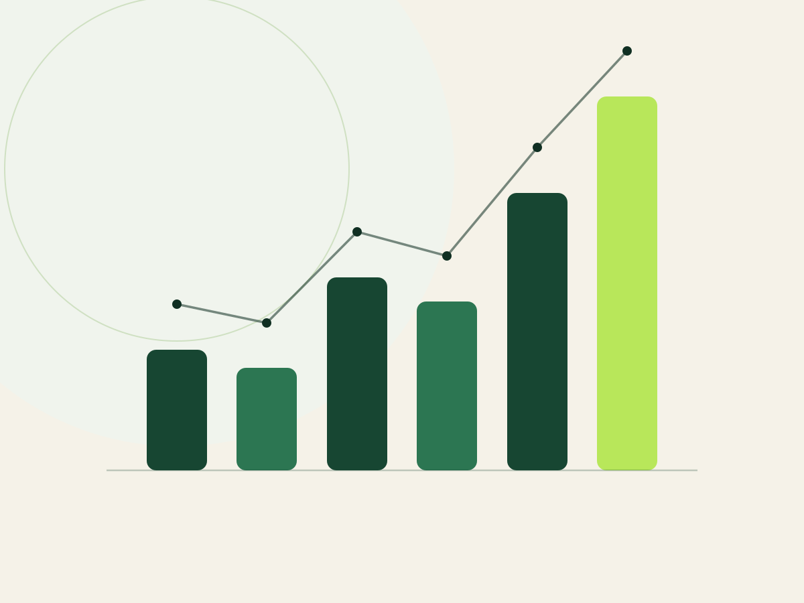
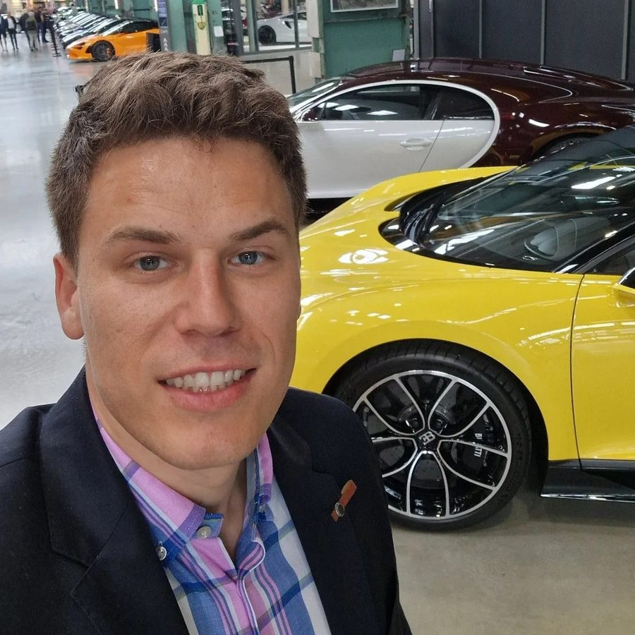
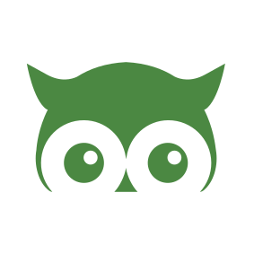
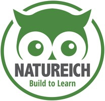
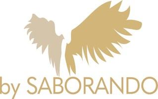
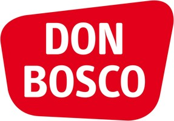
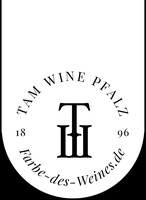

Clarity before activity
We prioritize first. That way the team invests time and budget where the greatest benefit is to be expected.
growald is an AI agency specialising in e-commerce processes and Amazon. We help where product, supply chain, Amazon, content and AI come together. We automate processes in other industries too.


Mario Moosbauer knows e-commerce from his own operational responsibility and from working with consumer brands that develop products, grow on Amazon and want to set up their processes to scale.
His experience ranges from product research, sourcing and supplier management through Amazon PPC, listings, SEO and content to automation and AI-supported workflows. As a result, growald looks not at individual campaigns alone, but at the business case and the system behind it.
More than 15 brands supported, over 200 products launched, over €4M in revenue with our own brands and over €100M in revenue at the brands we support form the operational foundation. Collaboration stays direct: clear priorities, traceable decisions and implementation without unnecessary complexity.

Natureich is our own Amazon FBA brand for non-digital wooden learning toys. Product ideas, manufacturer communication, samples, materials, packaging, CE certification, quality control, Amazon listings and PPC are not observed from the outside but run operationally by us.
This experience changes the consulting: a product idea has to carry demand, differentiation, margin, quality and compliance at the same time. If the business case does not hold up, we say so clearly.
Professionalism shows not in as many slides as possible, but in clear decisions, transparent work and reliable implementation.
We prioritize first. That way the team invests time and budget where the greatest benefit is to be expected.
Assumptions are named as assumptions. Decisions rely on available data and traceable criteria.
AI supports people. Critical decisions and external actions stay under human control.
You talk to the person who analyzes your situation and supports the implementation.
Priorities, results and open points are recorded transparently and discussed together.
Projects should deliver more than short-term performance. They should improve processes and knowledge in the company.
growald builds in AI where industry knowledge, clean processes and real source data exist. That creates the basis for safe, measurable solutions instead of interchangeable chatbot demos.
AI projects start with concrete e-commerce processes, not with a generic tool demo.
Time saved, quality, costs and error rate are made comparable before and after a pilot.
Data protection, human oversight, testing, logging and escalation paths are part of the solution.
Two own Amazon brands and ongoing support of consumer brands and industrial companies. Our consulting comes from the same operational work.

9× revenue growth
Amazon FBA brand for wooden learning toys. Product development, sourcing, CE certification, listings and PPC, all under our own responsibility.
View website10× revenue growthROAS 6 consistently
Professional-grade saw chains and guide bars, around €3M in annual revenue. Complete Amazon Ads management and product optimization. We also built the Shopify store and manage Google Ads.
View website
3.5× revenue growth2× conversion
Korean skincare: face masks, serums and eye care for the DACH market. Amazon Ads management, product optimization and case management.
View website
10% ACoS2,500+ products
Children's books and Kamishibai storytelling theater. Complete Amazon account management for a very large advertising account, plus case management and support with the move from Vendor Central to Seller Central.
View website2× revenue in 2 months
Premium wet food for dogs and cats. Complete account management including PPC, case management and flat file maintenance.
View website2× revenue growth
Jewelry and personalizable accessories from Munich. Amazon Ads management and ongoing strategy consulting for the marketplace channel.
View websiteAmazon FBA brand for lawn mower blades for robotic mowers. Second own brand under development: assortment, listings and advertising first-hand.
Drive systems and STM32 motor controller engineering from Munich. We built the Shopify store and support SEO landing pages, Google Ads and new customer acquisition.
View website
Wine brand from a Palatinate winemaking family that translates taste into color codes (umbrella brand TAM WINE). Amazon Ads management.
View websiteFurther supported brands on request. Each is named in agreement with the companies concerned.
The free analysis is the fastest way to an honest assessment and clear next steps.